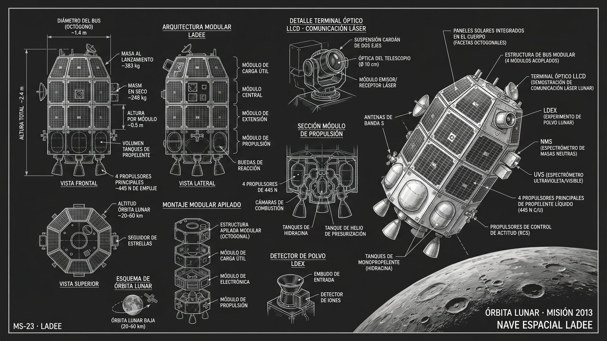

LADEE

Midió el aire de la Luna, que casi no existe: su exosfera tiene la 25 billonésima parte de la densidad de la atmósfera terrestre. Terminó estrellada contra la cara oculta, como estaba previsto.
Impacto planeado el 18 de abril de 2014 en la cara oculta, en el borde oriental del cráter Sundman V; la sonda LRO fotografió el lugar el 28 de octubre de 2014.. Personas: Rick Elphic, Butler Hine, Don Cornwell
Lo que hizo
- Mi encargo — Estudiar la exosfera lunar, esa capa de gas tan tenue que casi no existe, y el polvo que flota sobre la superficie. Fui la primera nave lanzada hacia la Luna desde Wallops.
- Datos por láser — Mi experimento LLCD transmitió datos con láser desde la órbita lunar a 622 Mbps de bajada y 20 de subida, a 385.000 kilómetros de distancia.
- Cómo terminé — Me quedé sin combustible para seguir en órbita, así que me dirigieron contra la cara oculta. El 28 de octubre de 2014, la sonda LRO fotografió mi cráter desde arriba.
Modelo 3D, chat y cómic, en tres idiomas
Fuentes
- science.nasa.gov/mission/ladee/in-depth
- www.nasa.gov/news-release/nasa-completes-ladee-mission-with-planned-impact-on-moons-surface
- www.nasa.gov/news-release/nasa-laser-communication-system-sets-record-with-data-transmissions-to-and-from-moon/
Ver el índice completo · Proyecto del NASA Space Apps Challenge 2026. Contenido con fuentes citadas.